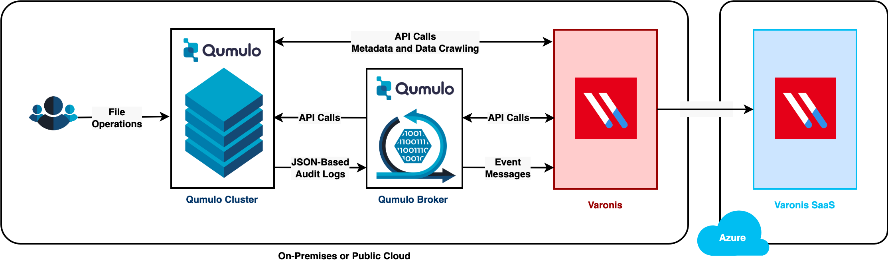
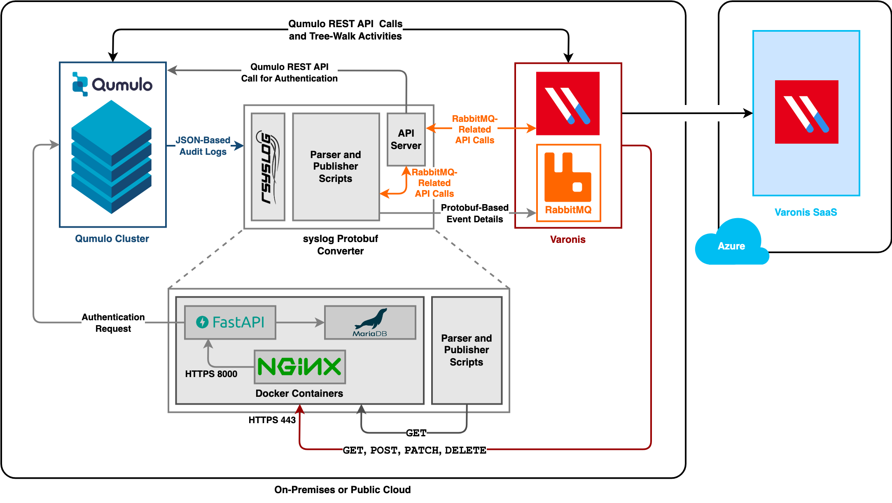

This section explains how Qumulo Core integrates with Varonis by using Qumulo Broker.
The Qumulo-Varonis integration monitors file and directory operations in Qumulo Core. When events take place in a Qumulo system, Qumulo Core adds the events to audit logs which track all actions that users take within a Qumulo namespace, including data access and modification, file system access, data sharing through new SMB shares or NFS exports, and system configuration changes. Qumulo Core uses the Qumulo Broker to process and send audit logs to Varonis.
How the Qumulo-Varonis Integration Works
This section describes how the Qumulo-Varonis integration works. It provides an overview of the integration workflow; explains how Qumulo Broker gathers, processes, and sends Qumulo Core audit logs; and describes how Qumulo Broker uses rsyslog queues to ensure efficient data transfer.
How Qumulo Clusters Send Audit Log Data to Varonis
Qumulo Core sends audit logs for each supported file- and directory-level operation in real time to Varonis for continuous monitoring. To detect anomalous behavior that system administrators can use to detect potential activity from a bad actor (for example, abnormal or high-frequency changes in file activity—such as file creation, deletion, and modification—or changes to access permissions), Varonis applies machine learning to Qumulo Core audit logs and issues alerts. In addition to common patterns, Varonis uses thread feeds and denylists to identify known ransomware and attack patterns.
The following architecture diagram shows the workflow between Qumulo Broker and Qumulo Core.
We recommend installing Qumulo Broker and Varonis in the same VLAN or VPC.

Although Qumulo currently is certified only for the Varonis SaaS offering, you can configure and use the SaaS offering with an on-premises Qumulo cluster.
How Qumulo Broker Gathers, Processes, and Emits Data
In Qumulo Core, each audit log has a specific logging requirement (for example, certain log types include only specific fields). Although normally Qumulo Core outputs audit logs in CSV format, it can output these additional fields in JSON format. For more information, see Configure Qumulo Audit Logging by Using the qq CLI.
Typically, Qumulo Core sends the audit logs to a single remote syslog instance. In the Qumulo-Varonis integration, Qumulo Broker receives the audit logs from multiple Qumulo clusters, converts them to various formats, and then sends them to Varonis.
Qumulo Core can send audit logs to only one target syslog instance. For information about sending your Qumulo audit logs to different target systems in addition to Varonis, see Configuring
rsyslog to Communicate with Multiple Clusters.The following architecture diagram shows how Qumulo Broker gathers, processes, and sends data.

Qumulo Broker Specifications
This section describes the specifications for Qumulo Broker, including system requirements, prerequisites, firewall definitions, and supported operations. Deploy Qumulo Broker on a stand-alone machine (or virtual machine) so that it sits between your Qumulo cluster and Varonis. For more information, see the Qumulo-Varonis integration architecture diagram.
System Requirements
We recommend the following system requirements for Qumulo Broker.
-
8-core processor
-
16 GB memory
-
200 GB disk space
Prerequisites
Deploying Qumulo Broker requires:
-
Qumulo Core 6.0.2 (and higher)
-
git -
docker23.0.1 (and higher) -
rsyslog8.2001 (and higher)
Firewall Definitions
In addition to the Varonis firewall requirements, you must also define the following firewall rules for Qumulo Broker connections.
| Port | Protocol | Source IP address | Destination IP address | Description |
|---|---|---|---|---|
| 22 | TCP | The system administrator's machine | Qumulo Broker | Qumulo Broker SSH connection |
| 443 | TCP | Qumulo Broker | GitHub and Docker Hub | Temporary GitHub and Docker Hub connections from Qumulo Broker |
| 443 | TCP | Varonis | Qumulo Broker | Qumulo Broker API calls |
| 514 | TCP | Qumulo Core (persistent and floating IP addresses) | Qumulo Broker | Qumulo Broker syslog connection |
| 8000 | TCP | Qumulo Broker IP address | Qumulo Core persistent and floating IP addresses | Qumulo Core API calls from Qumulo Broker |
Supported Operations
Qumulo Broker supports the following file- and directory-level operations.
| File-Level Operations | Directory-Level Operations |
|---|---|
|
|